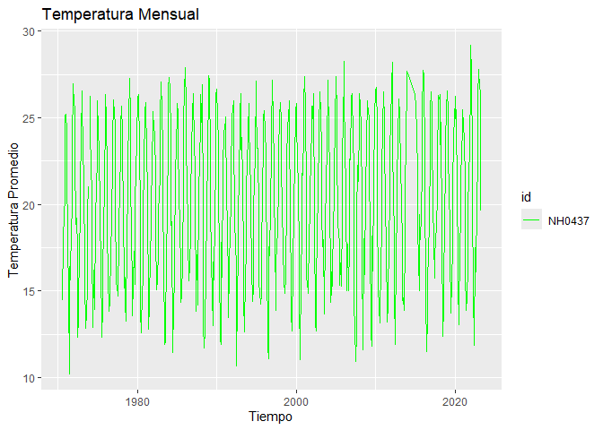
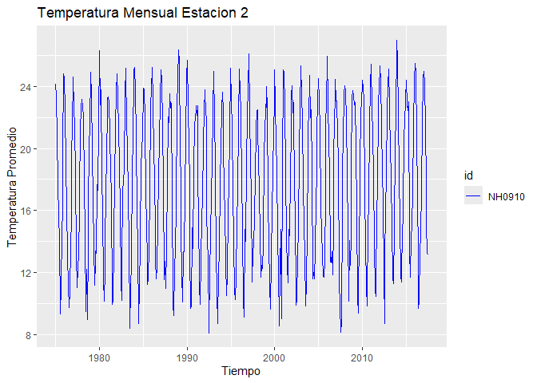

El objetivo del paquete paquetemeteorologico es proporcionar herramientas para la lectura, manipulación y visualización de datos de estaciones meteorológicas. Su proposito es facilitar el trabajo de los profesionales de las estaciones meteorologicas. Permite descargar datos, obtener resúmenes estadísticos clave y generar gráficos de tendencias de temperatura mensual.
Autores
El desarrollo y mantenimiento del paquetemeteorologico ha sido realizado por:
-
Juan Martín Bongiovanni (Autor, Mantenedor)
- GitHub: Martin-ia-pro
-
Lisandro Nicolas Seghezzo Prieri (Autor)
- GitHub: LisandroSeghezzo2003
Instalacion
Puedes instalar la versión de desarrollo de paquetemeteorologico directamente desde GitHub usando la librería pak:
# Instalar el paquete pak (si no lo tienes)
# install.packages("pak")
pak::pak("Martin-ia-pro/paquetemeteorologico")Ejemplos
Esto es un ejemplo de código básico para usar el paquete. Mostraremos el flujo basico del paquete que incluye descargar datos, obtener un resumen estadistico de los datos y graficar la temperatura mensual.
Usamos leer_estaciones() para obtener los datos de dos estaciones.
library(paquetemeteorologico)
# Descargar los datos (usando las rutas temporales/del paquete)
estacion_1 <- leer_estaciones("NH0437", ruta_temp1)
#> El archivo no existe en la ruta indicada. Descargando...
#> Descarga completada.
#> Warning: One or more parsing issues, call `problems()` on your data frame for details,
#> e.g.:
#> dat <- vroom(...)
#> problems(dat)
#> Rows: 18929 Columns: 35
#> ── Column specification ────────────────────────────────────────────────────────
#> Delimiter: ","
#> chr (2): id, direccion_viento_1000cm
#> dbl (22): temperatura_abrigo_150cm, temperatura_abrigo_150cm_maxima, temper...
#> lgl (10): temperatura_suelo_10cm_media, temperatura_inte_5cm, temperatura_i...
#> date (1): fecha
#>
#> ℹ Use `spec()` to retrieve the full column specification for this data.
#> ℹ Specify the column types or set `show_col_types = FALSE` to quiet this message.
#> Lectura completada. El dataset tiene 18929 filas y 35 columnas.
estacion_2 <- leer_estaciones("NH0910", ruta_temp2)
#> El archivo no existe en la ruta indicada. Descargando...
#> Descarga completada.
#> Rows: 15553 Columns: 35
#> ── Column specification ────────────────────────────────────────────────────────
#> Delimiter: ","
#> chr (1): id
#> dbl (5): temperatura_abrigo_150cm, temperatura_abrigo_150cm_maxima, temper...
#> lgl (28): temperatura_intemperie_5cm_minima, temperatura_intemperie_50cm_mi...
#> date (1): fecha
#>
#> ℹ Use `spec()` to retrieve the full column specification for this data.
#> ℹ Specify the column types or set `show_col_types = FALSE` to quiet this message.
#> Lectura completada. El dataset tiene 15553 filas y 35 columnas.Tambien podemos usar tabla_resumen_temperatura() para obtener un resumen estadistico que calcula el máximo, mínimo, promedio y desviación estándar de la temperatura para cada estación.
tabla_resumen_temperatura(estacion_1)
#> # A tibble: 1 × 5
#> id Max Min Promedio Desvio_Estandar
#> <chr> <dbl> <dbl> <dbl> <dbl>
#> 1 NH0437 36.3 2.1 20.2 5.77Posteriormente podemos utilizar la función graficar_temperatura_mensual() para visualizar las tendencias de temperatura mensual.Esta funcion genera un gráfico de líneas para visualizar las tendencias mensuales.
graficar_temperatura_mensual(estacion_1)
#> Warning: Using `size` aesthetic for lines was deprecated in ggplot2 3.4.0.
#> ℹ Please use `linewidth` instead.
#> ℹ The deprecated feature was likely used in the paquetemeteorologico package.
#> Please report the issue at
#> <https://github.com/Martin-ia-pro/paquetemeteorologico/issues>.
#> This warning is displayed once every 8 hours.
#> Call `lifecycle::last_lifecycle_warnings()` to see where this warning was
#> generated.
graficar_temperatura_mensual(estacion_2,color = "blue", titulo = "Temperatura Mensual Estacion 2")